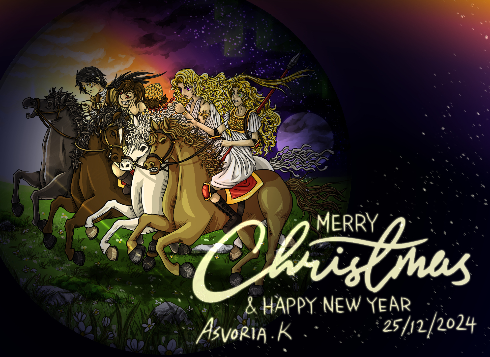

{% include masthead.html %}
{{ content }}

{%- if site.plugins contains 'jekyll-paginate' and page.paginate or site.gems contains 'jekyll-paginate' and page.paginate -%}
{%- comment -%}
Add paginator.posts loop if jekyll-paginate plugin is enabled
and page.paginate == true
{%- endcomment -%}
{% include posts-paginated.html %}
{%- else -%}
{% include posts-limit.html %}
{%- endif -%}